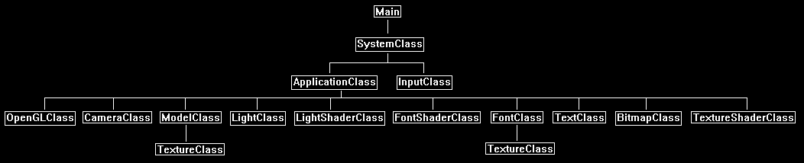

In most 3D applications the user will need to click on the screen with the mouse to select or interact with one of the 3D objects in the scene.
This process is usually referred to as selection or picking.
This tutorial will cover how to implement picking using OpenGL 4.0.
The process of picking involves translating a 2D mouse coordinate position into a vector that is in world space.
That vector is then used for intersection checks with all the visible 3D objects.
Once the 3D object is determined the test can be further refined to determine exactly which polygon was selected on that 3D object.
For this tutorial we will use a single sphere and do a ray-sphere intersection test whenever the user moves the mouse around.
We will also take the opportunity to implement a custom mouse cursor for this tutorial.

Framework
The framework looks large for this tutorial, however most of the new code is only inside the ApplicationClass.
Everything else in the framework is unchanged and is for supporting rendering text, rendering a mouse cursor, and rendering a blue sphere.

Systemclass.cpp
We will add a function to the system class and call it during initialization so that we can hide the default linux mouse pointer when it is hovering over our window.
bool SystemClass::HideCursor()
{
Pixmap blankBitmap;
Cursor cursor;
XColor dummy;
char data[1] = {0};
// Create a blank bitmap.
blankBitmap = XCreateBitmapFromData(m_videoDisplay, m_hwnd, data, 1, 1);
if(blankBitmap == None)
{
return false;
}
// Create the blank cursor now.
cursor = XCreatePixmapCursor(m_videoDisplay, blankBitmap, blankBitmap, &dummy, &dummy, 0, 0);
// Release the pixmap now that the cursor was created from it.
XFreePixmap(m_videoDisplay, blankBitmap);
// Set the blank bitmap cursor as active.
XDefineCursor(m_videoDisplay, m_hwnd, cursor);
return true;
}
Applicationclass.h
////////////////////////////////////////////////////////////////////////////////
// Filename: applicationclass.h
////////////////////////////////////////////////////////////////////////////////
#ifndef _APPLICATIONCLASS_H_
#define _APPLICATIONCLASS_H_
/////////////
// GLOBALS //
/////////////
const bool FULL_SCREEN = false;
const bool VSYNC_ENABLED = true;
const float SCREEN_NEAR = 0.3f;
const float SCREEN_DEPTH = 1000.0f;
///////////////////////
// MY CLASS INCLUDES //
///////////////////////
#include "inputclass.h"
#include "openglclass.h"
#include "cameraclass.h"
#include "modelclass.h"
#include "lightclass.h"
#include "lightshaderclass.h"
#include "fontshaderclass.h"
#include "fontclass.h"
#include "textclass.h"
#include "bitmapclass.h"
#include "textureshaderclass.h"
////////////////////////////////////////////////////////////////////////////////
// Class Name: ApplicationClass
////////////////////////////////////////////////////////////////////////////////
class ApplicationClass
{
public:
ApplicationClass();
ApplicationClass(const ApplicationClass&);
~ApplicationClass();
bool Initialize(Display*, Window, int, int);
void Shutdown();
bool Frame(InputClass*);
private:
bool Render();
We have some new functions here.
The first one is the general intersection check that forms the vector for checking the intersection and then calls the specific type of intersection check required.
The second function is the ray-sphere intersection check function; this function is called by TestIntersection.
Then we have some math helper functions for the intersection test setup.
For other intersection tests such as ray-triangle, ray-rectangle, and so forth you would add them here.
bool TestIntersection(int, int);
bool RaySphereIntersect(float[3], float[3], float);
void TransformCoord(float[3], float[16]);
void TransformNormal(float[3], float[16]);
void Vec3Normalize(float[3]);
private:
OpenGLClass* m_OpenGL;
CameraClass* m_Camera;
ModelClass* m_Model;
LightClass* m_Light;
LightShaderClass* m_LightShader;
FontShaderClass* m_FontShader;
FontClass* m_Font;
TextClass* m_TextString;
We add a bitmap object for rendering our custom mouse cursor.
BitmapClass* m_MouseBitmap;
TextureShaderClass* m_TextureShader;
int m_screenWidth, m_screenHeight;
};
#endif
Applicationclass.cpp
////////////////////////////////////////////////////////////////////////////////
// Filename: applicationclass.cpp
////////////////////////////////////////////////////////////////////////////////
#include "applicationclass.h"
ApplicationClass::ApplicationClass()
{
m_OpenGL = 0;
m_Camera = 0;
m_Model = 0;
m_Light = 0;
m_LightShader = 0;
m_FontShader = 0;
m_Font = 0;
m_TextString = 0;
m_MouseBitmap = 0;
m_TextureShader = 0;
}
ApplicationClass::ApplicationClass(const ApplicationClass& other)
{
}
ApplicationClass::~ApplicationClass()
{
}
bool ApplicationClass::Initialize(Display* display, Window win, int screenWidth, int screenHeight)
{
char modelFilename[128], textureFilename[128];
char testString[32];
bool result;
// Store the screen width and height.
m_screenWidth = screenWidth;
m_screenHeight = screenHeight;
// Create and initialize the OpenGL object.
m_OpenGL = new OpenGLClass;
result = m_OpenGL->Initialize(display, win, screenWidth, screenHeight, SCREEN_NEAR, SCREEN_DEPTH, VSYNC_ENABLED);
if(!result)
{
cout << "Error: Could not initialize the OpenGL object." << endl;
return false;
}
// Create and initialize the camera object.
m_Camera = new CameraClass;
m_Camera->SetPosition(0.0f, 0.0f, -10.0f);
m_Camera->Render();
m_Camera->RenderBaseViewMatrix();
Load the blue sphere here.
// Create and initialize the cube model object.
m_Model = new ModelClass;
strcpy(modelFilename, "../Engine/data/sphere.txt");
strcpy(textureFilename, "../Engine/data/blue.tga");
result = m_Model->Initialize(m_OpenGL, modelFilename, textureFilename, true, NULL, false, NULL, false);
if(!result)
{
cout << "Error: Could not initialize the model object." << endl;
return false;
}
Setup a basic light for the sphere.
// Create and initialize the light object.
m_Light = new LightClass;
m_Light->SetDirection(0.0f, 0.0f, 1.0f);
m_Light->SetDiffuseColor(1.0f, 1.0f, 1.0f, 1.0f);
Load the light shader for rendering the sphere.
// Create and initialize the light shader object.
m_LightShader = new LightShaderClass;
result = m_LightShader->Initialize(m_OpenGL);
if(!result)
{
cout << "Error: Could not initialize the light shader object." << endl;
return false;
}
Setup our font rendering related objects so that we can render a text string indicating if we have an intersection or not.
// Create and initialize the font shader object.
m_FontShader = new FontShaderClass;
result = m_FontShader->Initialize(m_OpenGL);
if(!result)
{
cout << "Error: Could not initialize the font shader object." << endl;
return false;
}
// Create and initialize the font object.
m_Font = new FontClass;
result = m_Font->Initialize(m_OpenGL, 0);
if(!result)
{
cout << "Error: Could not initialize the font object." << endl;
return false;
}
// Create and initialize the text string object.
m_TextString = new TextClass;
strcpy(testString, "Intersection: No");
result = m_TextString->Initialize(m_OpenGL, screenWidth, screenHeight, 32, m_Font, testString, 10, 10, 0.0f, 1.0f, 0.0f);
if(!result)
{
return false;
}
Create a bitmap for the mouse and load the texture shader for rendering the mouse bitmap on the screen.
// Create and initialize the mouse bitmap object.
m_MouseBitmap = new BitmapClass;
strcpy(textureFilename, "../Engine/data/mouse.tga");
result = m_MouseBitmap->Initialize(m_OpenGL, screenWidth, screenHeight, textureFilename, 50, 50);
if(!result)
{
cout << "Error: Could not initialize the mouse bitmap object." << endl;
return false;
}
// Create and initialize the texture shader object.
m_TextureShader = new TextureShaderClass;
result = m_TextureShader->Initialize(m_OpenGL);
if(!result)
{
cout << "Error: Could not initialize the texture shader object." << endl;
return false;
}
return true;
}
void ApplicationClass::Shutdown()
{
// Release the texture shader object.
if(m_TextureShader)
{
m_TextureShader->Shutdown();
delete m_TextureShader;
m_TextureShader = 0;
}
// Release the mouse bitmap object.
if(m_MouseBitmap)
{
m_MouseBitmap->Shutdown();
delete m_MouseBitmap;
m_MouseBitmap = 0;
}
// Release the text string object.
if(m_TextString)
{
m_TextString->Shutdown();
delete m_TextString;
m_TextString = 0;
}
// Release the font object.
if(m_Font)
{
m_Font->Shutdown();
delete m_Font;
m_Font = 0;
}
// Release the font shader object.
if(m_FontShader)
{
m_FontShader->Shutdown();
delete m_FontShader;
m_FontShader = 0;
}
// Release the light shader object.
if(m_LightShader)
{
m_LightShader->Shutdown();
delete m_LightShader;
m_LightShader = 0;
}
// Release the light object.
if(m_Light)
{
delete m_Light;
m_Light = 0;
}
// Release the cube model object.
if(m_Model)
{
m_Model->Shutdown();
delete m_Model;
m_Model = 0;
}
// Release the camera object.
if(m_Camera)
{
delete m_Camera;
m_Camera = 0;
}
// Release the OpenGL object.
if(m_OpenGL)
{
m_OpenGL->Shutdown();
delete m_OpenGL;
m_OpenGL = 0;
}
return;
}
bool ApplicationClass::Frame(InputClass* Input)
{
char testString[32];
int mouseX, mouseY;
bool result, intersect;
// Check if the escape key has been pressed, if so quit.
if(Input->IsEscapePressed() == true)
{
return false;
}
Each frame we get the location of the mouse cursor.
Once we have that we can first update where the mouse bitmap is being rendered on the screen.
Then after that we use the TestIntersection function to see if the mouse is intersecting with the blue sphere or not.
Once we know if we have an intersection or not, we can then update the text string with that information.
// Get the location of the mouse from the input object.
Input->GetMouseLocation(mouseX, mouseY);
// Update the location of the mouse cursor on the screen.
m_MouseBitmap->SetRenderLocation(mouseX, mouseY);
// Check if the mouse intersects the sphere.
intersect = TestIntersection(mouseX, mouseY);
// If it intersects then update the text string message.
if(intersect == true)
{
strcpy(testString, "Intersection: Yes");
}
else
{
strcpy(testString, "Intersection: No");
}
// Update the text string.
result = m_TextString->UpdateText(m_Font, testString, 10, 10, 0.0f, 1.0f, 0.0f);
if(!result)
{
return false;
}
// Render the final graphics scene.
result = Render();
if(!result)
{
return false;
}
return true;
}
bool ApplicationClass::Render()
{
float worldMatrix[16], viewMatrix[16], projectionMatrix[16], baseViewMatrix[16], orthoMatrix[16], translateMatrix[16];
float diffuseLightColor[4], lightDirection[3];
float pixelColor[4];
bool result;
// Clear the buffers to begin the scene.
m_OpenGL->BeginScene(0.0f, 0.0f, 0.0f, 1.0f);
Get all the matrices we need for the different 3D and 2D rendering we will do each frame.
// Get the world, view, and projection matrices from the opengl and camera objects.
m_OpenGL->GetWorldMatrix(worldMatrix);
m_Camera->GetViewMatrix(viewMatrix);
m_OpenGL->GetProjectionMatrix(projectionMatrix);
m_Camera->GetBaseViewMatrix(baseViewMatrix);
m_OpenGL->GetOrthoMatrix(orthoMatrix);
// Get the light properties.
m_Light->GetDirection(lightDirection);
m_Light->GetDiffuseColor(diffuseLightColor);
Render the sphere first in the upper left portion of the screen to make sure our picking takes into account the correct location.
// Translate to the location of the sphere.
m_OpenGL->MatrixTranslation(translateMatrix, -5.0f, 1.0f, 5.0f);
// Set the light shader as the current shader program and set the matrices that it will use for rendering.
result = m_LightShader->SetShaderParameters(translateMatrix, viewMatrix, projectionMatrix, lightDirection, diffuseLightColor);
if(!result)
{
return false;
}
// Render the model.
m_Model->SetTexture1(0);
m_Model->Render();
Being 2D rendering and render the text string and the mouse bitmap.
// Disable the Z buffer and enable alpha blending for 2D rendering.
m_OpenGL->TurnZBufferOff();
m_OpenGL->EnableAlphaBlending();
// Get the color to render the render count text as.
m_TextString->GetPixelColor(pixelColor);
// Set the font shader as active and set its parameters.
result = m_FontShader->SetShaderParameters(worldMatrix, baseViewMatrix, orthoMatrix, pixelColor);
if(!result)
{
return false;
}
// Set the font texture as the active texture.
m_Font->SetTexture(0);
// Render the text string using the font shader.
m_TextString->Render();
// Set the texture shader as active and set its parameters.
result = m_TextureShader->SetShaderParameters(worldMatrix, baseViewMatrix, orthoMatrix);
if(!result)
{
return false;
}
// Render the mouse cursor using the texture shader.
m_MouseBitmap->SetTexture(0);
m_MouseBitmap->Render();
// Enable the Z buffer and disable alpha blending now that 2D rendering is complete.
m_OpenGL->TurnZBufferOn();
m_OpenGL->DisableAlphaBlending();
// Present the rendered scene to the screen.
m_OpenGL->EndScene();
return true;
}
The TestIntersection function is pretty much the entire focus of this tutorial.
It takes as input the 2D mouse coordinates and then forms a vector in 3D space which it uses to then check for an intersection with the sphere.
That vector is called the picking ray.
The picking ray has an origin and a direction.
With the 3D coordinate (origin) and 3D vector/normal (direction) we can create a line in 3D space and find out what it collides with.
In the other GLSL tutorials we are very used to a vertex shader that takes a 3D point (vertice) and moves it from 3D space onto the 2D screen so it can be rendered as a pixel.
Well now we are doing the exact opposite and moving a 2D point from the screen into 3D space.
So, what we need to do is just reverse our usual process.
So, where we would usually take a 3D point from world to view to projection to make a 2D point, we will now instead take a 2D point and go from projection to view to world and turn it into a 3D point.
To do the reverse process we first start by taking the mouse coordinates and moving them into the -1 to +1 range on both axes.
When we have that we then divide by the screen aspect using the projection matrix.
With that value we can then multiply it by the inverse view matrix (inverse because we are going in reverse direction) to get the direction vector in view space.
We can set the origin of the vector in view space to just be the location of the camera.
With the direction vector and origin in view space we can now complete the final process of moving it into 3D world space.
To do so we first need to get the world matrix and translate it by the position of the sphere.
With the updated world matrix, we once again need to invert it (since the process is going in the opposite direction) and then we can multiply the origin and direction by the inverted world matrix.
We also normalize the direction after the multiplication.
This gives us the origin and direction of the vector in 3D world space so that we can do tests with other objects that are also in 3D world space.
Now that we have the origin of the vector and the direction of the vector we can perform an intersection test.
In this tutorial we perform a ray-sphere intersection test, but you could perform any kind of intersection test now that you have the vector in 3D world space.
bool ApplicationClass::TestIntersection(int mouseX, int mouseY)
{
float projectionMatrix[16], viewMatrix[16], inverseViewMatrix[16], worldMatrix[16], inverseWorldMatrix[16];
float rayDirection[3], rayOrigin[3];
float pointX, pointY;
bool intersect;
// Move the mouse cursor coordinates into the -1 to +1 range.
pointX = ((2.0f * (float)mouseX) / (float)m_screenWidth) - 1.0f;
pointY = (((2.0f * (float)mouseY) / (float)m_screenHeight) - 1.0f) * -1.0f;
// Adjust the points using the projection matrix to account for the aspect ratio of the viewport.
m_OpenGL->GetProjectionMatrix(projectionMatrix);
pointX = pointX / projectionMatrix[0];
pointY = pointY / projectionMatrix[5];
// Get the inverse of the view matrix.
m_Camera->GetViewMatrix(viewMatrix);
m_OpenGL->MatrixInverse(inverseViewMatrix, viewMatrix);
// Calculate the direction of the picking ray in view space.
rayDirection[0] = (pointX * inverseViewMatrix[0]) + (pointY * inverseViewMatrix[4]) + inverseViewMatrix[8];
rayDirection[1] = (pointX * inverseViewMatrix[1]) + (pointY * inverseViewMatrix[5]) + inverseViewMatrix[9];
rayDirection[2] = (pointX * inverseViewMatrix[2]) + (pointY * inverseViewMatrix[6]) + inverseViewMatrix[10];
// Get the origin of the picking ray which is the position of the camera.
m_Camera->GetPosition(rayOrigin);
// Create a world matrix as a translation to the location of the sphere.
m_OpenGL->MatrixTranslation(worldMatrix, -5.0f, 1.0f, 5.0f);
// Now get the inverse of the translated world matrix.
m_OpenGL->MatrixInverse(inverseWorldMatrix, worldMatrix);
// Now transform the ray origin and the ray direction from view space to world space using the inverse world matrix.
TransformCoord(rayOrigin, inverseWorldMatrix);
TransformNormal(rayDirection, inverseWorldMatrix);
// Normalize the ray direction.
Vec3Normalize(rayDirection);
// Now perform the ray-sphere intersection test.
intersect = RaySphereIntersect(rayOrigin, rayDirection, 1.0f);
return intersect;
}
This function performs the math of a basic ray-sphere intersection test.
bool ApplicationClass::RaySphereIntersect(float rayOrigin[3], float rayDirection[3], float radius)
{
float a, b, c, discriminant;
// Calculate the a, b, and c coefficients.
a = (rayDirection[0] * rayDirection[0]) + (rayDirection[1] * rayDirection[1]) + (rayDirection[2] * rayDirection[2]);
b = ((rayDirection[0] * rayOrigin[0]) + (rayDirection[1] * rayOrigin[1]) + (rayDirection[2] * rayOrigin[2])) * 2.0f;
c = ((rayOrigin[0] * rayOrigin[0]) + (rayOrigin[1] * rayOrigin[1]) + (rayOrigin[2] * rayOrigin[2])) - (radius * radius);
// Find the discriminant.
discriminant = (b * b) - (4 * a * c);
// if discriminant is negative the picking ray missed the sphere, otherwise it intersected the sphere.
if(discriminant < 0.0f)
{
return false;
}
return true;
}
The following three math functions are used by TestIntersection for setting up our picking ray.
void ApplicationClass::TransformCoord(float vector[3], float matrix[16])
{
float normal;
float x, y, z;
// Calculate the normal.
normal = (matrix[3] * vector[0]) + (matrix[7] * vector[1]) + (matrix[11] * vector[2]) + matrix[15];
// Transform the 3D vector by the 4x4 matrix.
x = ((matrix[0] * vector[0]) + (matrix[4] * vector[1]) + (matrix[8] * vector[2]) + matrix[12]) / normal;
y = ((matrix[1] * vector[0]) + (matrix[5] * vector[1]) + (matrix[9] * vector[2]) + matrix[13]) / normal;
z = ((matrix[2] * vector[0]) + (matrix[6] * vector[1]) + (matrix[10] * vector[2]) + matrix[14]) / normal;
// Store the result in the reference.
vector[0] = x;
vector[1] = y;
vector[2] = z;
return;
}
void ApplicationClass::TransformNormal(float vectorNormal[3], float matrix[16])
{
float x, y, z;
// Transform the 3D vector normal by the given matrix.
x = (vectorNormal[0] * matrix[0]) + (vectorNormal[1] * matrix[4]) + (vectorNormal[2] * matrix[8]);
y = (vectorNormal[0] * matrix[1]) + (vectorNormal[1] * matrix[5]) + (vectorNormal[2] * matrix[9]);
z = (vectorNormal[0] * matrix[2]) + (vectorNormal[1] * matrix[6]) + (vectorNormal[2] * matrix[10]);
// Store the result in the reference.
vectorNormal[0] = x;
vectorNormal[1] = y;
vectorNormal[2] = z;
return;
}
void ApplicationClass::Vec3Normalize(float vector[3])
{
float normal;
float x, y, z;
// Get the length of the vector.
normal = (vector[0] * vector[0]) + (vector[1] * vector[1]) + (vector[2] * vector[2]);
normal = sqrt(normal);
// Prevent divide by zero.
if(normal == 0.0f)
{
x = 0.0f;
y = 0.0f;
z = 0.0f;
}
else
{
// Normalize the vector.
x = vector[0] / normal;
y = vector[1] / normal;
z = vector[2] / normal;
}
// Store the result in the reference.
vector[0] = x;
vector[1] = y;
vector[2] = z;
return;
}
Summary
We can now perform basic intersection tests with 3D objects in the scene using picking.
To Do Exercises
1. Compile and run the program. Use the mouse to move the cursor over the sphere or the empty space to test intersections. Press escape to quit.
2. Add a cube, triangle, and rectangle model to the scene. Also add intersection test functions for the new three types.
3. Now that you have "bounding box" tests further refine it so that if the line intersects the sphere, it then does a second check for all the triangles in the sphere and highlights the selected triangle.
4. Do the same as number three expect for rectangles and cubes.
5. Place two objects in front of each other, make sure you intersection test returns only the one closest to the camera and ignores the objects behind it if the intersection test returns multiple intersections.
6. Encapsulate all of this picking functionality into a new IntersectorClass.
Source Code
Source Code and Data Files: gl4linuxtut47_src.tar.gz